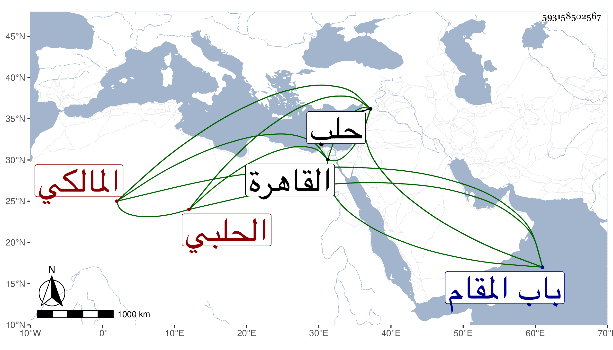

0902Sakhawi.DawLamic.ITO20230111-ara1.EIS1600.593158502567
Biography ID: 593158502567
390
عبد الرحمن بن محمد بن محمد بن محمود بن غازي بن أيوب بن محمود ابن ختلو فتح الدين أبو البشري الحلبي المالكي أخو علي والمحب محمد الحنفي الآتيين والمحب الأكبر ويعرف كسلفه بابن الشحنة . ولد في سنة ثلاث وخمسين وسبعمائة وسمع على الظهير بن العجمي والكمال بن حبيب وابن الصابوني ومما سمعه عليه سيرة الدمياطي وأخذ عن أبيه وأخيه والسراج الهندي وناب عن أخيه في قضاء الحنفية بحلب ، وولي افتاء دار العدل ثم تحول بعد الفتنة العظمى مالكيا وولي قضاء المالكية ببلده نيفا وعشرين سنة ولم يتهن بذلك بل حصل له نكد لاختلاف الدول وقدم القاهرة غير مرة . قال ابن خطيب الناصرية رافقته في القضاء وكان إنسانا حسنا عنده حشمة ومروءة وعصبية وهو صديقي وحبيبي وله نظم قليل فمنه :
| يا سادتي رقوا لرقة نازح | لفظته أيدي البعد عن أوطانه |
| والله ما جلتم بخاطر عبدكم | إلا وفاض الدمع من أجفانه |
وقوله :
| لا تلوموا الغمام إن صب دمعا | وتوالت لأجله الأنواء |
| فالليالي أكثرن فينا الرزايا | فبكت رحمة علينا السماء |
وأنشد من نظمه أيضا قصيدة نونية . مات في ليلة السبت ثامن المحرم سنة ثلاثين بحلب ودفن بتربة اشقتمر خارج باب المقام وذكره شيخنا في إنبائه وساق له المقطوع الثاني قال وهذا عنوان نظمه انتهى . وقد سمعته هو وغيره من نظمه من ابن أخيه وقال انه كان يستحضر الحكايات والنوادر وله نظم حسن قال وكان جل أمره العربية ولم يكن بذاك كذا قال .
